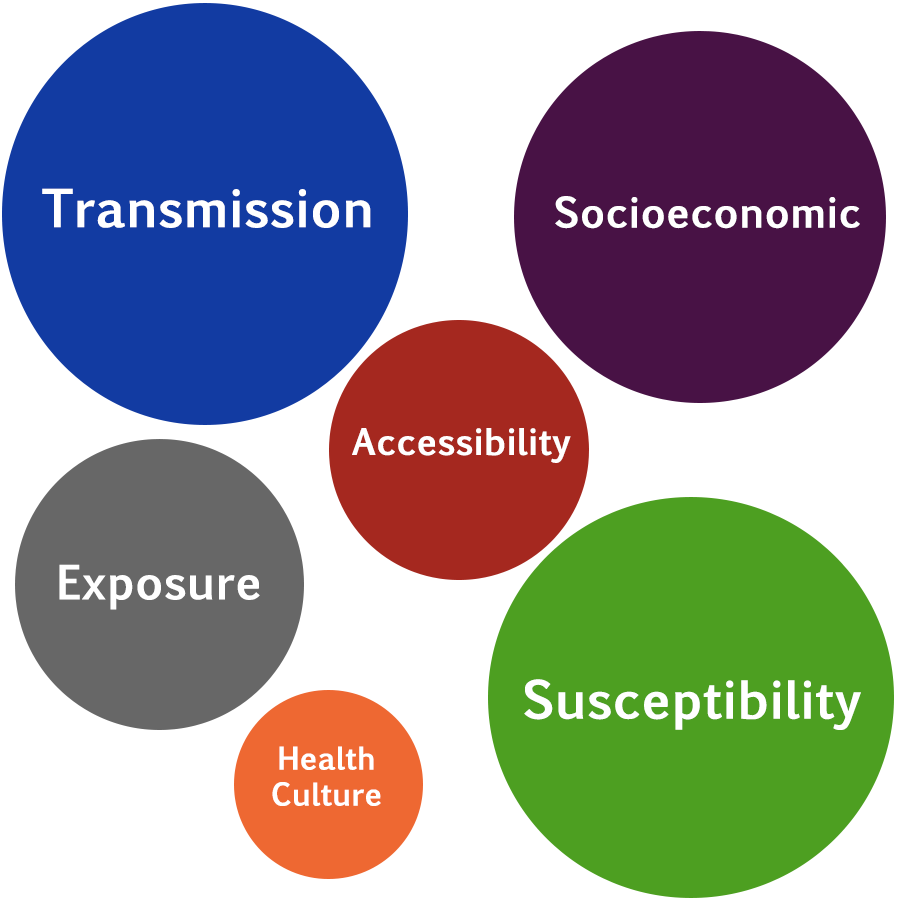

Our website provides users with an interactive way to learn about the different risk factors throughout the counties of Missouri.
Susceptibility (Individual) Risk: How susceptible an individual in a county might be to COVID-19. The inclusion of known and possible co-morbidities and age breaks were assessed.
Transmission (Community) Risk: What the potential transmission risk of COVID-19 within a county might be. The inclusion of commuting, migration, worker types, group gatherings, and living situation.
Socioeconomic Risk:What might be some socioeconomic / demographic variables that would capture and describe the associated social context risk within that county. The inclusion of race, ethnicity, disability, insurance status, veteran status, and education level.
Accessibility Risk: What infrastructure components could be included to provide an assessment of accessibility and establish differences between counties in terms of their access to health options and care. The development and inclusion of various hospital, nursing home, and telehealth access measures as well as broadband metrics.
Health Resource Risk: What health resources are available to a county’s population to mitigate and aid in the response to the epidemic. The typical health resource measures included beds, ICU, and professional staffing measures.
Exposure Risk:Incorporated existing exposure metrics (cases, testing, deaths) as temporally collected to aid in the development of associations, correlations, and trends.
Transmission (Community) Risk: What the potential transmission risk of COVID-19 within a county might be. The inclusion of commuting, migration, worker types, group gatherings, and living situation.
Socioeconomic Risk:What might be some socioeconomic / demographic variables that would capture and describe the associated social context risk within that county. The inclusion of race, ethnicity, disability, insurance status, veteran status, and education level.
Accessibility Risk: What infrastructure components could be included to provide an assessment of accessibility and establish differences between counties in terms of their access to health options and care. The development and inclusion of various hospital, nursing home, and telehealth access measures as well as broadband metrics.
Health Resource Risk: What health resources are available to a county’s population to mitigate and aid in the response to the epidemic. The typical health resource measures included beds, ICU, and professional staffing measures.
Exposure Risk:Incorporated existing exposure metrics (cases, testing, deaths) as temporally collected to aid in the development of associations, correlations, and trends.
County Risk Score=Σ risk category risk scores
Risk Cateogry Risk Score=Σ risk factor risk values
Risk Factor Risk Value=Risk factor quantile rank
How to use the Counties Dashboard
The “Counties” dashboard allows users to dive-in to different risk
categories and learn about the magnitude of risk factors in the
individual counties of Missouri.

How to navigate dashboard:
1) Select a county
2) Select a Risk Category
3) Click on Risk Factors to geo-spatially visualize
Features of dashboard:
A) A COVID-19 risk assessment of each county which includes a risk score per category (sum of all risk factor values) and a total risk score (sum of all risk category scores). The wind rose plot reports the proportion of each risk category as compared to the max value of all Missouri counties.
B) Risk factor bar plot that compares a county’s value to the average and max of all Missouri counties.
C) A risk factor choropleth map.
D) COVID-19 weekly Cases and Deaths (updated daily)
How to use the Risk Categories Dashboard
The “Risk Categories” dashboard lets users create a customized risk assessment by selecting which risk categories they’d like to include in the county risk score. Users can also visualize risk in relation to how urban/rural a county is.
How to navigate dashboard:
1) Select risk categories to be included in the county risk score
2) Filter counties based on the rural-urban continuum (rural VS urban)
3) Highlight a county of interest (optional)
4) Review filter selections and legend
Features of dashboard:
A) Choropleth map of county risk scores (based on selected risk categories).
B) B) Bar plot ordered by highest county risk total (counties that do not fit within filter specifications are not included in this plot).